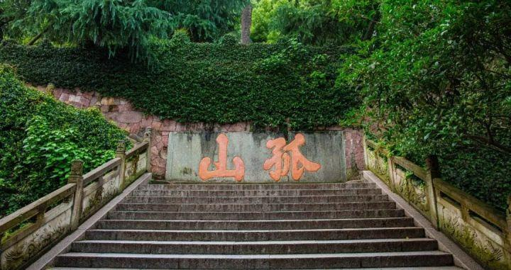

Explore the timeless beauty of Hangzhou’s West Lake
To enrich your experience at ICFEM 2025, we warmly invite all participants to join our West Lake Hiking Tour in Hangzhou — one of China’s most iconic and picturesque destinations. The lake, surrounded by temples, gardens, and ancient causeways, has inspired poets and scholars for over a thousand years. This relaxing half-day walking tour offers a perfect blend of nature, culture, and gentle exercise.
The recommended hiking route is approximately 6 kilometers and takes around 3 hours at a leisurely pace. The path follows the classic “Half Lake, Half City” loop, allowing participants to enjoy both natural scenery and cultural landmarks.
Suggested Route: Broken Bridge → Bai Causeway → Solitary Hill → Su Causeway → Leifeng Pagoda
*If the map does not load, you can view it directly on Google Maps.
The starting point of our hike, the Broken Bridge is famous for its appearance in the Chinese legend “The Legend of the White Snake.” Despite its name, the bridge is intact — the “broken” refers to the illusion created by snow melting unevenly in winter.
Named after the Tang dynasty poet Bai Juyi, the Bai Causeway stretches gracefully across the lake. Walking here, you'll find willow trees, arching bridges, and reflections of boats gliding on the water — a perfect photo spot.
The only natural island on West Lake, Solitary Hill is home to historic pavilions, the Xiling Seal Engravers’ Society, and beautiful views of the lake. It is a tranquil place where nature and art merge.
This scenic dyke, built by the poet-governor Su Dongpo during the Song dynasty, is lined with willow trees and stone bridges. It is one of the “Ten Scenes of West Lake,” renowned for its serene morning view.
The tour concludes at Leifeng Pagoda, standing tall on Sunset Hill. The pagoda offers panoramic views of West Lake and Hangzhou city — a rewarding end to the hike.
All images are sourced from Wikimedia Commons or Wikipedia under public license or fair use.
Please select an appropriate link to complete your registration.
For participants outside Chinese Mainland, please use the following link to register.
Overseas Delegates Register here
For participants in Chinese Mainland, please use the following link to register.
Chinese Mainland Delegates Register here